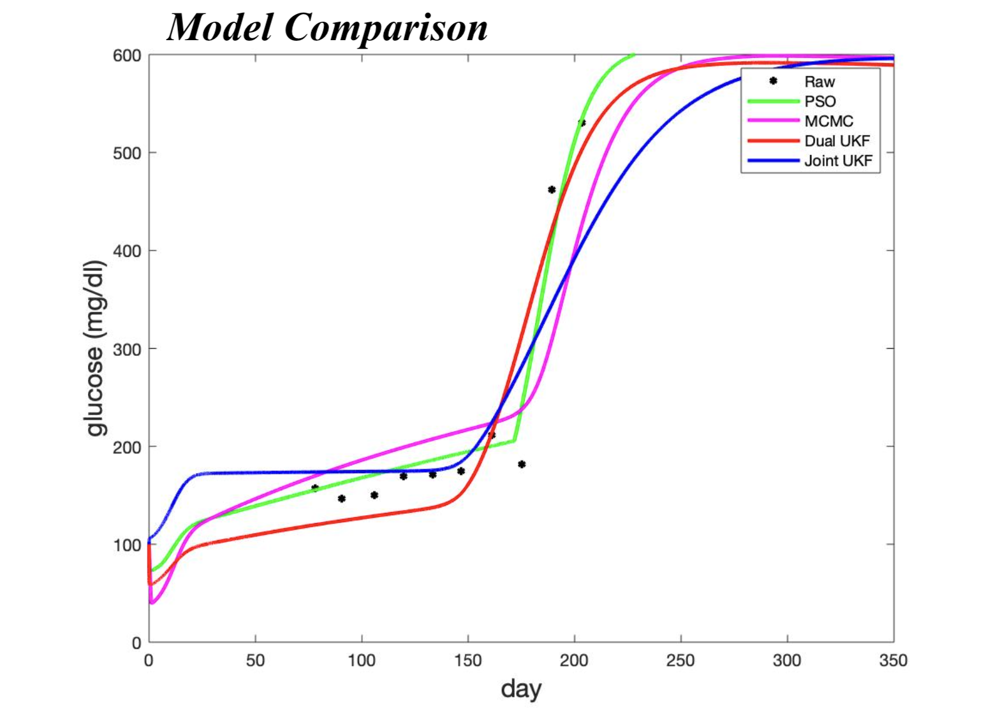

Parameter Estimation for a
Type 1 Diabetes ODE Model
Blerta Shtylla, Marissa Gee, Shahrokh Shabahang, Leif Eldevik, and Lisette DePillis. A mathematical model for dc vaccine treatment of type i diabetes. Frontiers in Physiology, 10:1107, 2019.
The goal of this project was to research, apply, and compare different
parameter estimation techniques. We compared three methods: Markov Chain
Monte Carlo (MCMC) methods, Particle Swarm Optimizaiton (PSO), and Kalman
Filters to estimate parameters for a single-compartment ODE model of type
1 diabetes once in mice. This model involved a 12 non-linear equation system
with 53 parameters to model immune cell interactions in the pancreas of mice.

MCMC is a Bayesian technique that simulates sampling parameter values from a p-dimesional posterior density function according to a specified acceptance criterion to form a posterior distribution of potential parameter values. PSO is a stochastic approach in which "particles" traverse a p-dimensional search space.  Finally Kalman Filtering is a recursive method that uses a previous estimate and newly observed data to compute updated system estimates. In this project, our algorithms produced similar parameter estimations. We concluded that advantages of each method must be considered for the particular problem to which they are being applied. For example, our MCMC method worked best with a single averaged data set while the Kalman Filter methods could adapt to multiple data sets with relative ease although required fine-tuning of algorithm parameters.
Collaborators: Christina Catlett, Daniel Shenker, and Rachel Wander
Advisors: Dr. Lisette de Pillis, Dr. Blerta Shtylla, Dr. Christina Edholm, and An Do
Harvey Mudd College Summer 2020 REU